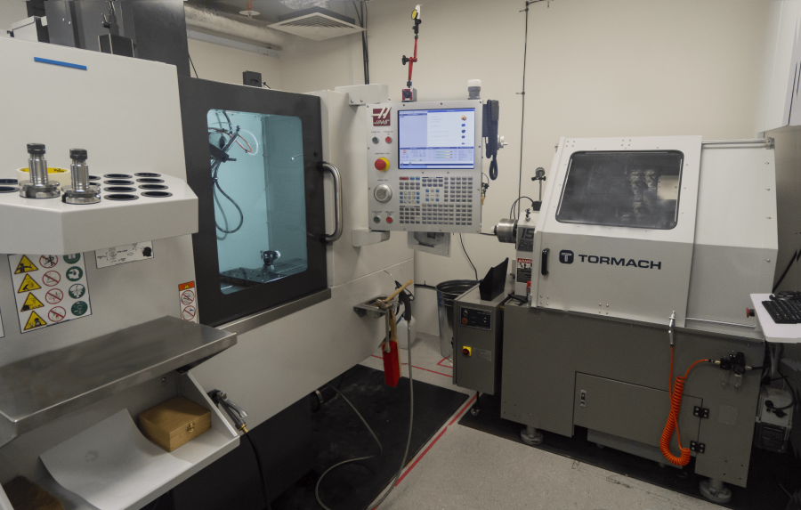
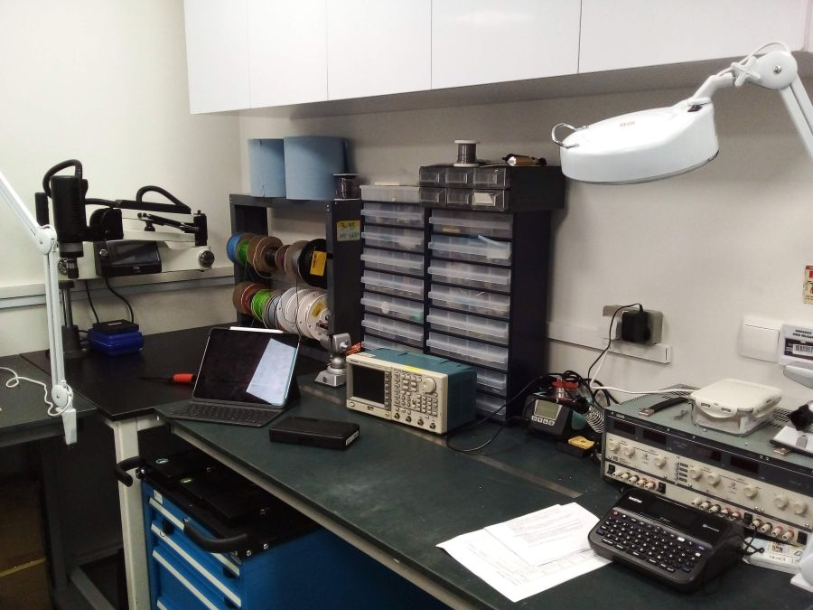

The research laboratory and the adjacent prototyping workshop form the focal point (pun intended) of NOBIC. This is where research into novel optical imaging modalities as well as building and testing of custom imaging instrumentation takes place. Check out our current research projects to see what we are working on here.
This is where precision manufacturing of custom (not
only) optomechanical parts takes place. The in-house manufacturing
capabilities allow us to build custom imaging instruments that are as
compact, robust and easy to use, as you would expect from a commercial
product.


We can do:
- precision CNC machining (Haas Super Mini Mill
2, Tormach 15L Slant-PRO Lathe)
- 3D printing
- electronics assembly
- powder coating
- laser engraving
- ...